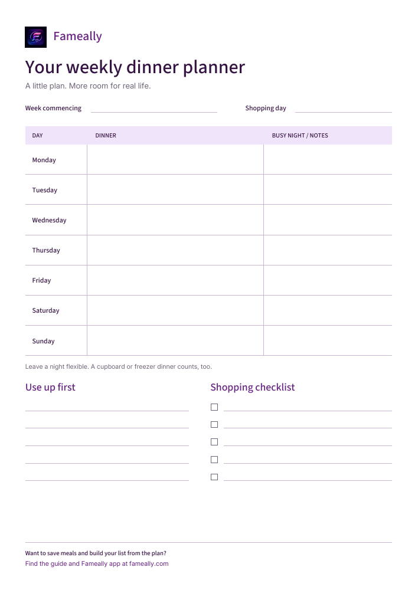

Printable weekly meal planner or app: which fits your family?
Choose paper, an app, or both for your household, with a free printable weekly dinner planner to get started.
Read the guide →Practical ideas for planning dinner, sharing the shop, and making the most of what’s already in the cupboard.

Choose paper, an app, or both for your household, with a free printable weekly dinner planner to get started.
Read the guide →Share dinner decisions and one shopping list with a flexible one-week routine for busy UK households.
Read the guideCompare Fameally, Good Food, Mealime, Paprika, Plan to Eat, AnyList, Samsung Food, and Cozi by the family planning job they do best.
Read the guideChoose a family meal planning app that helps with reusable meals, weekly planning, shared shopping lists, and real-life household routines.
Read the guidePlan cheaper family dinners before the weekly shop by reusing ingredients, reducing waste, and keeping an easy backup meal ready.
Read the guideUse a realistic weekly template that balances effort, cost, leftovers, flexible nights, familiar meals, and the family food shop.
Read the guideKeep regular household items like washing tablets, toothpaste, kitchen roll, bin bags, cereal, and bread from falling through the gaps.
Read the guideGive the week a familiar shape, leave room for preferences, and turn family meals into a food shop without starting from a blank page every time.
Read the guideTurn planned meals into ingredients, combine duplicate items, check what you already have, then add the household extras that never belong to one recipe.
Read the guideA useful plan is flexible enough to handle late finishes, clubs, traffic, tired evenings, changing plans, and simple fallback options for the nights that do not behave.
Read the guideBuild meals, generate the food shop, and keep household lists together in the mobile app.